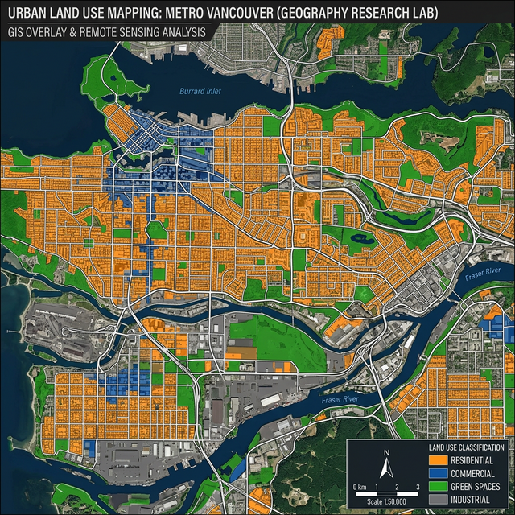
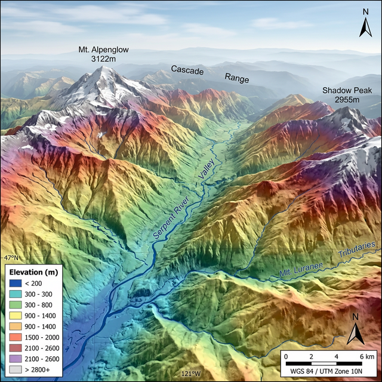
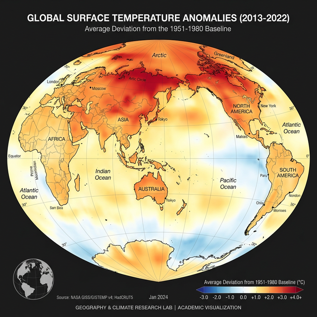

Spatial Analysis Meets
Intelligent Computing
We integrate deep learning, machine learning, and geospatial technologies — including Google Earth Engine, QGIS, Python, and R — with rigorous field-based survey research. Our work bridges computational geography and ground-truth validation to generate actionable, evidence-based insights for real-world geographic challenges.
Core Research Focus
Our lab operates at the intersection of computational geospatial science and field-based geographic inquiry — from satellite data analysis to ground-truth validation.
Deep Learning & Machine Learning
Developing and applying CNN, transformer, and ensemble models for automated land cover classification, feature extraction, change detection, and spatial prediction from remote sensing data using Python and R ecosystems.
Remote Sensing & Earth Observation
Leveraging multi-spectral, hyperspectral, SAR, and thermal satellite imagery for land use/land cover analysis, vegetation monitoring, urban expansion tracking, and environmental change assessment at multiple spatial-temporal scales.
Google Earth Engine & Cloud Computing
Harnessing the planetary-scale analysis capabilities of Google Earth Engine for large-area land monitoring, time-series analysis, composite generation, and automated geospatial workflows across continental and global scales.
GIS & Spatial Analysis (QGIS)
Building advanced spatial analysis workflows in QGIS and ArcGIS for multi-criteria evaluation, network analysis, geostatistics, terrain modeling, and spatial decision support systems for planning and policy.
Field Survey & Ground Validation
Conducting systematic field surveys, sequential exploratory research, GPS-based ground-truth campaigns, and in-situ observations for validating remote sensing products and ensuring the reliability of geospatial analyses.
Python, R & Geospatial Programming
Proficiency in Python (GeoPandas, Rasterio, TensorFlow, PyTorch) and R (sf, terra, caret, randomForest) for spatial data science, statistical modeling, reproducible research, and automated geospatial pipelines.
Our Integrated Approach
From satellite imagery to field validation — a complete research pipeline for generating meaningful geographic outcomes.
1. Data Acquisition
Satellite imagery (Sentinel, Landsat, MODIS), UAV surveys, and open geospatial datasets
2. Processing & Analysis
GEE cloud computing, Python/R scripting, ML/DL model development, and QGIS workflows
3. Field Validation
Ground-truth surveys, exploratory spatial research, GPS field campaigns, and accuracy assessment
4. Outcomes & Impact
Validated maps, published research, policy recommendations, and open datasets for the community
45+
Research Publications
12+
Active Projects
8
Team Members
15+
Collaborating Institutions
Research Highlights
Selected ongoing projects demonstrating our integrated computational and field-based research approach.

Deep Learning
LULC Classification with CNN & Field Validation
Developing deep learning architectures for automated land use/land cover classification from Sentinel-2 imagery, validated through systematic ground-truth surveys and exploratory field research across diverse landscapes.

GEE & QGIS
Multi-Temporal Change Detection using GEE
Large-scale land cover change analysis leveraging Google Earth Engine’s cloud computing platform combined with QGIS-based spatial modeling and field-validated accuracy assessment protocols.

Machine Learning
Climate Variability & Spatial Prediction Modeling
Machine learning-driven spatial analysis of climate patterns using Random Forest, XGBoost, and ensemble methods in R and Python, corroborated by meteorological ground station observations.
Tools & Technologies
Python Ecosystem
GeoPandas · Rasterio · scikit-learn · TensorFlow · PyTorch · xarray · Folium · matplotlib
R Spatial Stack
sf · terra · stars · tmap · caret · randomForest · rgee · tidyverse
Platforms & GIS
Google Earth Engine · QGIS · ArcGIS Pro · SNAP/ESA · PostgreSQL/PostGIS
Latest News & Updates
March 2026
New Paper in Remote Sensing of Environment
Our study on “Multi-temporal Sentinel-2 Analysis for Crop Classification Using Ensemble Learning with Field-Validated Training Data” has been accepted for publication.
February 2026
Field Campaign Completed
Our team successfully completed a 3-week ground-truth data collection campaign across 150+ sample sites for validating deep learning-based land cover maps in the study region.
January 2026
Best Paper Award at International GIS Conference
Our paper on “Integrating GEE-based Change Detection with Exploratory Field Research for Urban Sprawl Analysis” received the Best Paper Award.
Collaborate With Us
We welcome collaborations with researchers, institutions, and organizations working in remote sensing, GIS, spatial data science, and field-based geographic research.